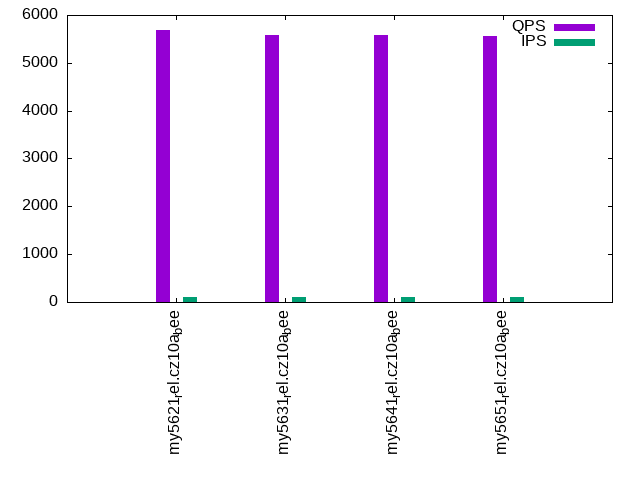

This is a report for the insert benchmark with 30M docs and 1 client(s). It is generated by scripts (bash, awk, sed) and Tufte might not be impressed. An overview of the insert benchmark is here and a short update is here. Below, by DBMS, I mean DBMS+version.config. An example is my8020.c10b40 where my means MySQL, 8020 is version 8.0.20 and c10b40 is the name for the configuration file.
The test server has 8 AMD cores, 16G RAM and an NVMe SSD. It is described here as the Beelink. The benchmark was run with 1 client and there were 1 or 3 connections per client (1 for queries or inserts without rate limits, 1+1 for rate limited inserts+deletes). It uses 1 table. It loads 30M rows per table without secondary indexes, creates 3 secondary indexes per table, then inserts 50m+50m rows per table with a delete per insert to avoid growing the table. It then does 6 read+write tests for 1800s each that do queries as fast as possible with 100,100,500,500,1000,1000 inserts/s and the same for deletes/s per client concurrent with the queries. The database is cached in memory. Clients and the DBMS share one server. The per-database configs are in the per-database subdirectories here.
The tested DBMS are:
The numbers are inserts/s for l.i0, l.i1 and l.i2, indexed docs (or rows) /s for l.x and queries/s for qr100, qp100 thru qr1000, qp1000" The values are the average rate over the entire test for inserts (IPS) and queries (QPS). The range of values for IPS and QPS is split into 3 parts: bottom 25%, middle 50%, top 25%. Values in the bottom 25% have a red background, values in the top 25% have a green background and values in the middle have no color. A gray background is used for values that can be ignored because the DBMS did not sustain the target insert rate. Red backgrounds are not used when the minimum value is within 80% of the max value.
| dbms | l.i0 | l.x | l.i1 | l.i2 | qr100 | qp100 | qr500 | qp500 | qr1000 | qp1000 |
|---|---|---|---|---|---|---|---|---|---|---|
| my5621_rel.cz10a_bee | 103448 | 101352 | 18527 | 12165 | 5688 | 4652 | 5671 | 4641 | 5680 | 4607 |
| my5631_rel.cz10a_bee | 98361 | 102740 | 17969 | 11962 | 5577 | 4558 | 5598 | 4518 | 5562 | 4553 |
| my5641_rel.cz10a_bee | 98039 | 100000 | 17905 | 11919 | 5592 | 4563 | 5601 | 4605 | 5596 | 4572 |
| my5651_rel.cz10a_bee | 100000 | 107914 | 18124 | 12106 | 5570 | 4574 | 5547 | 4507 | 5573 | 4528 |
This table has relative throughput, throughput for the DBMS relative to the DBMS in the first line, using the absolute throughput from the previous table. Values less than 0.95 have a yellow background. Values greater than 1.05 have a blue background.
| dbms | l.i0 | l.x | l.i1 | l.i2 | qr100 | qp100 | qr500 | qp500 | qr1000 | qp1000 |
|---|---|---|---|---|---|---|---|---|---|---|
| my5621_rel.cz10a_bee | 1.00 | 1.00 | 1.00 | 1.00 | 1.00 | 1.00 | 1.00 | 1.00 | 1.00 | 1.00 |
| my5631_rel.cz10a_bee | 0.95 | 1.01 | 0.97 | 0.98 | 0.98 | 0.98 | 0.99 | 0.97 | 0.98 | 0.99 |
| my5641_rel.cz10a_bee | 0.95 | 0.99 | 0.97 | 0.98 | 0.98 | 0.98 | 0.99 | 0.99 | 0.99 | 0.99 |
| my5651_rel.cz10a_bee | 0.97 | 1.06 | 0.98 | 1.00 | 0.98 | 0.98 | 0.98 | 0.97 | 0.98 | 0.98 |
This lists the average rate of inserts/s for the tests that do inserts concurrent with queries. For such tests the query rate is listed in the table above. The read+write tests are setup so that the insert rate should match the target rate every second. Cells that are not at least 95% of the target have a red background to indicate a failure to satisfy the target.
| dbms | qr100.L1 | qp100.L2 | qr500.L3 | qp500.L4 | qr1000.L5 | qp1000.L6 |
|---|---|---|---|---|---|---|
| my5621_rel.cz10a_bee | 100 | 100 | 499 | 499 | 997 | 998 |
| my5631_rel.cz10a_bee | 100 | 100 | 499 | 499 | 997 | 998 |
| my5641_rel.cz10a_bee | 100 | 100 | 499 | 498 | 997 | 995 |
| my5651_rel.cz10a_bee | 100 | 100 | 499 | 495 | 998 | 998 |
| target | 100 | 100 | 500 | 500 | 1000 | 1000 |
l.i0: load without secondary indexes. Graphs for performance per 1-second interval are here.
Average throughput:
Insert response time histogram: each cell has the percentage of responses that take <= the time in the header and max is the max response time in seconds. For the max column values in the top 25% of the range have a red background and in the bottom 25% of the range have a green background. The red background is not used when the min value is within 80% of the max value.
| dbms | 256us | 1ms | 4ms | 16ms | 64ms | 256ms | 1s | 4s | 16s | gt | max |
|---|---|---|---|---|---|---|---|---|---|---|---|
| my5621_rel.cz10a_bee | 94.239 | 5.643 | 0.110 | 0.004 | 0.003 | 0.100 | |||||
| my5631_rel.cz10a_bee | 87.819 | 12.059 | 0.117 | 0.002 | 0.003 | 0.098 | |||||
| my5641_rel.cz10a_bee | 85.496 | 14.381 | 0.119 | 0.001 | 0.003 | 0.100 | |||||
| my5651_rel.cz10a_bee | 90.958 | 8.926 | 0.111 | 0.001 | 0.003 | 0.097 |
Performance metrics for the DBMS listed above. Some are normalized by throughput, others are not. Legend for results is here.
ips qps rps rmbps wps wmbps rpq rkbpq wpi wkbpi csps cpups cspq cpupq dbgb1 dbgb2 rss maxop p50 p99 tag 103448 0 905 3.5 317.3 31.2 0.009 0.035 0.003 0.309 12308 22.8 0.119 18 2.0 18.5 2.5 0.100 104188 88828 my5621_rel.cz10a_bee 98361 0 854 3.3 300.4 29.8 0.009 0.035 0.003 0.310 11975 22.3 0.122 18 2.0 18.5 2.6 0.098 99116 87333 my5631_rel.cz10a_bee 98039 0 857 3.3 299.9 29.5 0.009 0.035 0.003 0.309 11906 22.5 0.121 18 2.0 18.5 2.6 0.100 98410 84327 my5641_rel.cz10a_bee 100000 0 878 3.4 305.1 30.4 0.009 0.035 0.003 0.311 12305 22.5 0.123 18 2.0 18.5 2.7 0.097 100604 87340 my5651_rel.cz10a_bee
l.x: create secondary indexes.
Average throughput:
Performance metrics for the DBMS listed above. Some are normalized by throughput, others are not. Legend for results is here.
ips qps rps rmbps wps wmbps rpq rkbpq wpi wkbpi csps cpups cspq cpupq dbgb1 dbgb2 rss maxop p50 p99 tag 101352 0 15 0.1 855.6 105.4 0.000 0.001 0.008 1.065 2393 11.2 0.024 9 4.2 20.7 4.6 0.002 NA NA my5621_rel.cz10a_bee 102740 0 12 0.0 861.7 107.4 0.000 0.000 0.008 1.071 2438 11.4 0.024 9 4.2 20.7 4.6 0.002 NA NA my5631_rel.cz10a_bee 100000 0 13 0.1 831.1 103.5 0.000 0.001 0.008 1.060 2328 11.4 0.023 9 4.2 20.7 4.9 0.002 NA NA my5641_rel.cz10a_bee 107914 0 11 0.0 858.6 111.7 0.000 0.000 0.008 1.059 2532 11.6 0.023 9 4.2 20.7 4.8 0.002 NA NA my5651_rel.cz10a_bee
l.i1: continue load after secondary indexes created with 50 inserts per transaction. Graphs for performance per 1-second interval are here.
Average throughput:
Insert response time histogram: each cell has the percentage of responses that take <= the time in the header and max is the max response time in seconds. For the max column values in the top 25% of the range have a red background and in the bottom 25% of the range have a green background. The red background is not used when the min value is within 80% of the max value.
| dbms | 256us | 1ms | 4ms | 16ms | 64ms | 256ms | 1s | 4s | 16s | gt | max |
|---|---|---|---|---|---|---|---|---|---|---|---|
| my5621_rel.cz10a_bee | 95.085 | 4.732 | 0.182 | 0.001 | 0.109 | ||||||
| my5631_rel.cz10a_bee | 94.656 | 5.163 | 0.180 | nonzero | 0.110 | ||||||
| my5641_rel.cz10a_bee | 94.592 | 5.229 | 0.178 | nonzero | 0.103 | ||||||
| my5651_rel.cz10a_bee | 94.834 | 4.986 | 0.179 | nonzero | 0.101 |
Delete response time histogram: each cell has the percentage of responses that take <= the time in the header and max is the max response time in seconds. For the max column values in the top 25% of the range have a red background and in the bottom 25% of the range have a green background. The red background is not used when the min value is within 80% of the max value.
| dbms | 256us | 1ms | 4ms | 16ms | 64ms | 256ms | 1s | 4s | 16s | gt | max |
|---|---|---|---|---|---|---|---|---|---|---|---|
| my5621_rel.cz10a_bee | 96.362 | 3.476 | 0.161 | 0.001 | 0.076 | ||||||
| my5631_rel.cz10a_bee | 96.240 | 3.607 | 0.152 | 0.062 | |||||||
| my5641_rel.cz10a_bee | 96.139 | 3.714 | 0.147 | 0.061 | |||||||
| my5651_rel.cz10a_bee | 96.295 | 3.556 | 0.149 | nonzero | 0.073 |
Performance metrics for the DBMS listed above. Some are normalized by throughput, others are not. Legend for results is here.
ips qps rps rmbps wps wmbps rpq rkbpq wpi wkbpi csps cpups cspq cpupq dbgb1 dbgb2 rss maxop p50 p99 tag 18527 0 625 2.4 1842.3 81.7 0.034 0.135 0.099 4.516 15706 34.5 0.848 149 6.2 22.7 6.8 0.109 19579 5894 my5621_rel.cz10a_bee 17969 0 601 2.3 1794.6 79.4 0.033 0.134 0.100 4.527 15532 34.2 0.864 152 6.1 22.6 6.8 0.110 19029 5547 my5631_rel.cz10a_bee 17905 0 602 2.3 1794.8 79.4 0.034 0.134 0.100 4.543 15492 34.3 0.865 153 6.1 22.6 6.8 0.103 18979 5394 my5641_rel.cz10a_bee 18124 0 611 2.4 1818.4 80.4 0.034 0.135 0.100 4.545 15570 34.4 0.859 152 6.2 22.7 6.8 0.101 19229 5644 my5651_rel.cz10a_bee
l.i2: continue load after secondary indexes created with 5 inserts per transaction. Graphs for performance per 1-second interval are here.
Average throughput:
Insert response time histogram: each cell has the percentage of responses that take <= the time in the header and max is the max response time in seconds. For the max column values in the top 25% of the range have a red background and in the bottom 25% of the range have a green background. The red background is not used when the min value is within 80% of the max value.
| dbms | 256us | 1ms | 4ms | 16ms | 64ms | 256ms | 1s | 4s | 16s | gt | max |
|---|---|---|---|---|---|---|---|---|---|---|---|
| my5621_rel.cz10a_bee | 13.649 | 86.108 | 0.040 | 0.200 | 0.001 | nonzero | 0.079 | ||||
| my5631_rel.cz10a_bee | 10.344 | 89.396 | 0.052 | 0.207 | 0.001 | 0.049 | |||||
| my5641_rel.cz10a_bee | 9.774 | 89.966 | 0.050 | 0.209 | 0.001 | 0.049 | |||||
| my5651_rel.cz10a_bee | 10.521 | 89.230 | 0.048 | 0.200 | 0.001 | nonzero | 0.067 |
Delete response time histogram: each cell has the percentage of responses that take <= the time in the header and max is the max response time in seconds. For the max column values in the top 25% of the range have a red background and in the bottom 25% of the range have a green background. The red background is not used when the min value is within 80% of the max value.
| dbms | 256us | 1ms | 4ms | 16ms | 64ms | 256ms | 1s | 4s | 16s | gt | max |
|---|---|---|---|---|---|---|---|---|---|---|---|
| my5621_rel.cz10a_bee | 13.822 | 85.943 | 0.033 | 0.200 | 0.001 | nonzero | 0.079 | ||||
| my5631_rel.cz10a_bee | 13.423 | 86.334 | 0.035 | 0.206 | 0.001 | 0.049 | |||||
| my5641_rel.cz10a_bee | 12.547 | 87.208 | 0.035 | 0.209 | 0.001 | 0.048 | |||||
| my5651_rel.cz10a_bee | 13.917 | 85.849 | 0.033 | 0.200 | 0.001 | nonzero | 0.068 |
Performance metrics for the DBMS listed above. Some are normalized by throughput, others are not. Legend for results is here.
ips qps rps rmbps wps wmbps rpq rkbpq wpi wkbpi csps cpups cspq cpupq dbgb1 dbgb2 rss maxop p50 p99 tag 12165 0 2192 8.6 1242.9 51.8 0.180 0.721 0.102 4.360 58349 36.3 4.796 239 6.2 22.7 6.8 0.079 12202 10818 my5621_rel.cz10a_bee 11962 0 2153 8.4 1259.6 52.0 0.180 0.720 0.105 4.454 57575 36.3 4.813 243 6.1 22.6 6.8 0.049 11991 10886 my5631_rel.cz10a_bee 11919 0 2146 8.4 1251.2 51.7 0.180 0.720 0.105 4.441 57422 36.3 4.818 244 6.2 22.7 6.8 0.049 11947 10788 my5641_rel.cz10a_bee 12106 0 2177 8.5 1192.4 50.2 0.180 0.719 0.098 4.242 57886 36.2 4.781 239 6.2 22.7 6.8 0.067 12100 10983 my5651_rel.cz10a_bee
qr100.L1: range queries with 100 insert/s per client. Graphs for performance per 1-second interval are here.
Average throughput:
Query response time histogram: each cell has the percentage of responses that take <= the time in the header and max is the max response time in seconds. For max values in the top 25% of the range have a red background and in the bottom 25% of the range have a green background. The red background is not used when the min value is within 80% of the max value.
| dbms | 256us | 1ms | 4ms | 16ms | 64ms | 256ms | 1s | 4s | 16s | gt | max |
|---|---|---|---|---|---|---|---|---|---|---|---|
| my5621_rel.cz10a_bee | 96.549 | 3.445 | 0.002 | 0.004 | nonzero | 0.017 | |||||
| my5631_rel.cz10a_bee | 96.320 | 3.674 | 0.002 | 0.004 | nonzero | 0.022 | |||||
| my5641_rel.cz10a_bee | 96.317 | 3.677 | 0.002 | 0.003 | nonzero | 0.017 | |||||
| my5651_rel.cz10a_bee | 96.223 | 3.771 | 0.003 | 0.004 | nonzero | 0.023 |
Insert response time histogram: each cell has the percentage of responses that take <= the time in the header and max is the max response time in seconds. For max values in the top 25% of the range have a red background and in the bottom 25% of the range have a green background. The red background is not used when the min value is within 80% of the max value.
| dbms | 256us | 1ms | 4ms | 16ms | 64ms | 256ms | 1s | 4s | 16s | gt | max |
|---|---|---|---|---|---|---|---|---|---|---|---|
| my5621_rel.cz10a_bee | 42.806 | 52.806 | 4.389 | 0.038 | |||||||
| my5631_rel.cz10a_bee | 42.778 | 51.694 | 5.528 | 0.040 | |||||||
| my5641_rel.cz10a_bee | 44.750 | 52.111 | 3.139 | 0.037 | |||||||
| my5651_rel.cz10a_bee | 41.222 | 53.556 | 5.222 | 0.033 |
Delete response time histogram: each cell has the percentage of responses that take <= the time in the header and max is the max response time in seconds. For max values in the top 25% of the range have a red background and in the bottom 25% of the range have a green background. The red background is not used when the min value is within 80% of the max value.
| dbms | 256us | 1ms | 4ms | 16ms | 64ms | 256ms | 1s | 4s | 16s | gt | max |
|---|---|---|---|---|---|---|---|---|---|---|---|
| my5621_rel.cz10a_bee | 42.806 | 54.972 | 2.222 | 0.031 | |||||||
| my5631_rel.cz10a_bee | 41.611 | 55.639 | 2.750 | 0.033 | |||||||
| my5641_rel.cz10a_bee | 44.889 | 53.694 | 1.417 | 0.029 | |||||||
| my5651_rel.cz10a_bee | 41.444 | 56.167 | 2.389 | 0.042 |
Performance metrics for the DBMS listed above. Some are normalized by throughput, others are not. Legend for results is here.
ips qps rps rmbps wps wmbps rpq rkbpq wpi wkbpi csps cpups cspq cpupq dbgb1 dbgb2 rss maxop p50 p99 tag 100 5688 4 0.0 524.2 15.7 0.001 0.003 5.253 160.667 23529 13.0 4.136 183 6.2 22.7 6.8 0.017 5642 5466 my5621_rel.cz10a_bee 100 5577 4 0.0 527.1 15.8 0.001 0.003 5.282 161.639 23156 13.1 4.152 188 6.1 22.6 6.8 0.022 5532 5370 my5631_rel.cz10a_bee 100 5592 4 0.0 517.6 15.5 0.001 0.003 5.187 158.930 23167 13.1 4.143 187 6.2 22.7 6.8 0.017 5549 5386 my5641_rel.cz10a_bee 100 5570 4 0.0 545.9 16.3 0.001 0.003 5.475 167.560 23178 13.2 4.161 190 6.2 22.7 6.8 0.023 5530 5354 my5651_rel.cz10a_bee
qp100.L2: point queries with 100 insert/s per client. Graphs for performance per 1-second interval are here.
Average throughput:
Query response time histogram: each cell has the percentage of responses that take <= the time in the header and max is the max response time in seconds. For max values in the top 25% of the range have a red background and in the bottom 25% of the range have a green background. The red background is not used when the min value is within 80% of the max value.
| dbms | 256us | 1ms | 4ms | 16ms | 64ms | 256ms | 1s | 4s | 16s | gt | max |
|---|---|---|---|---|---|---|---|---|---|---|---|
| my5621_rel.cz10a_bee | 94.712 | 5.283 | 0.003 | 0.002 | nonzero | 0.018 | |||||
| my5631_rel.cz10a_bee | 93.673 | 6.322 | 0.003 | 0.002 | nonzero | 0.022 | |||||
| my5641_rel.cz10a_bee | 93.887 | 6.109 | 0.003 | 0.002 | nonzero | 0.017 | |||||
| my5651_rel.cz10a_bee | 94.197 | 5.797 | 0.003 | 0.003 | nonzero | 0.017 |
Insert response time histogram: each cell has the percentage of responses that take <= the time in the header and max is the max response time in seconds. For max values in the top 25% of the range have a red background and in the bottom 25% of the range have a green background. The red background is not used when the min value is within 80% of the max value.
| dbms | 256us | 1ms | 4ms | 16ms | 64ms | 256ms | 1s | 4s | 16s | gt | max |
|---|---|---|---|---|---|---|---|---|---|---|---|
| my5621_rel.cz10a_bee | 49.250 | 47.833 | 2.917 | 0.040 | |||||||
| my5631_rel.cz10a_bee | 48.972 | 47.944 | 3.083 | 0.044 | |||||||
| my5641_rel.cz10a_bee | 49.111 | 47.500 | 3.389 | 0.041 | |||||||
| my5651_rel.cz10a_bee | 46.389 | 48.861 | 4.750 | 0.052 |
Delete response time histogram: each cell has the percentage of responses that take <= the time in the header and max is the max response time in seconds. For max values in the top 25% of the range have a red background and in the bottom 25% of the range have a green background. The red background is not used when the min value is within 80% of the max value.
| dbms | 256us | 1ms | 4ms | 16ms | 64ms | 256ms | 1s | 4s | 16s | gt | max |
|---|---|---|---|---|---|---|---|---|---|---|---|
| my5621_rel.cz10a_bee | 48.361 | 49.806 | 1.833 | 0.037 | |||||||
| my5631_rel.cz10a_bee | 48.194 | 50.222 | 1.583 | 0.033 | |||||||
| my5641_rel.cz10a_bee | 48.417 | 49.667 | 1.917 | 0.037 | |||||||
| my5651_rel.cz10a_bee | 44.750 | 53.194 | 2.056 | 0.033 |
Performance metrics for the DBMS listed above. Some are normalized by throughput, others are not. Legend for results is here.
ips qps rps rmbps wps wmbps rpq rkbpq wpi wkbpi csps cpups cspq cpupq dbgb1 dbgb2 rss maxop p50 p99 tag 100 4652 4 0.0 560.8 16.8 0.001 0.004 5.625 172.263 20635 13.1 4.436 225 6.2 22.7 6.8 0.018 4619 4350 my5621_rel.cz10a_bee 100 4558 4 0.0 533.0 15.9 0.001 0.004 5.346 163.477 20220 13.7 4.436 240 6.1 22.6 6.8 0.022 4519 4253 my5631_rel.cz10a_bee 100 4563 4 0.0 528.8 15.8 0.001 0.004 5.304 162.211 20225 13.5 4.432 237 6.2 22.7 6.8 0.017 4507 4242 my5641_rel.cz10a_bee 100 4574 4 0.0 520.4 15.5 0.001 0.004 5.220 159.592 20225 13.2 4.421 231 6.2 22.7 6.8 0.017 4554 4286 my5651_rel.cz10a_bee
qr500.L3: range queries with 500 insert/s per client. Graphs for performance per 1-second interval are here.
Average throughput:
Query response time histogram: each cell has the percentage of responses that take <= the time in the header and max is the max response time in seconds. For max values in the top 25% of the range have a red background and in the bottom 25% of the range have a green background. The red background is not used when the min value is within 80% of the max value.
| dbms | 256us | 1ms | 4ms | 16ms | 64ms | 256ms | 1s | 4s | 16s | gt | max |
|---|---|---|---|---|---|---|---|---|---|---|---|
| my5621_rel.cz10a_bee | 96.529 | 3.466 | 0.002 | 0.003 | 0.016 | ||||||
| my5631_rel.cz10a_bee | 96.282 | 3.713 | 0.002 | 0.003 | 0.016 | ||||||
| my5641_rel.cz10a_bee | 96.289 | 3.706 | 0.002 | 0.003 | nonzero | 0.016 | |||||
| my5651_rel.cz10a_bee | 95.586 | 4.409 | 0.002 | 0.003 | 0.015 |
Insert response time histogram: each cell has the percentage of responses that take <= the time in the header and max is the max response time in seconds. For max values in the top 25% of the range have a red background and in the bottom 25% of the range have a green background. The red background is not used when the min value is within 80% of the max value.
| dbms | 256us | 1ms | 4ms | 16ms | 64ms | 256ms | 1s | 4s | 16s | gt | max |
|---|---|---|---|---|---|---|---|---|---|---|---|
| my5621_rel.cz10a_bee | 89.550 | 10.178 | 0.272 | 0.035 | |||||||
| my5631_rel.cz10a_bee | 89.650 | 10.183 | 0.167 | 0.035 | |||||||
| my5641_rel.cz10a_bee | 89.689 | 10.194 | 0.117 | 0.033 | |||||||
| my5651_rel.cz10a_bee | 89.739 | 10.128 | 0.133 | 0.029 |
Delete response time histogram: each cell has the percentage of responses that take <= the time in the header and max is the max response time in seconds. For max values in the top 25% of the range have a red background and in the bottom 25% of the range have a green background. The red background is not used when the min value is within 80% of the max value.
| dbms | 256us | 1ms | 4ms | 16ms | 64ms | 256ms | 1s | 4s | 16s | gt | max |
|---|---|---|---|---|---|---|---|---|---|---|---|
| my5621_rel.cz10a_bee | 89.994 | 9.839 | 0.167 | 0.033 | |||||||
| my5631_rel.cz10a_bee | 90.161 | 9.694 | 0.144 | 0.025 | |||||||
| my5641_rel.cz10a_bee | 90.339 | 9.589 | 0.072 | 0.042 | |||||||
| my5651_rel.cz10a_bee | 90.278 | 9.644 | 0.078 | 0.024 |
Performance metrics for the DBMS listed above. Some are normalized by throughput, others are not. Legend for results is here.
ips qps rps rmbps wps wmbps rpq rkbpq wpi wkbpi csps cpups cspq cpupq dbgb1 dbgb2 rss maxop p50 p99 tag 499 5671 17 0.1 287.1 9.1 0.003 0.012 0.576 18.720 22906 13.5 4.039 190 6.2 22.7 6.8 0.016 5629 5455 my5621_rel.cz10a_bee 499 5598 17 0.1 116.1 4.0 0.003 0.012 0.233 8.157 22090 13.5 3.946 193 6.1 22.6 6.8 0.016 5546 5370 my5631_rel.cz10a_bee 499 5601 17 0.1 69.5 2.6 0.003 0.012 0.139 5.274 22041 13.7 3.935 196 6.2 22.7 6.8 0.016 5562 5370 my5641_rel.cz10a_bee 499 5547 17 0.1 149.8 5.0 0.003 0.012 0.300 10.235 21975 13.4 3.962 193 6.2 22.7 6.8 0.015 5533 5419 my5651_rel.cz10a_bee
qp500.L4: point queries with 500 insert/s per client. Graphs for performance per 1-second interval are here.
Average throughput:
Query response time histogram: each cell has the percentage of responses that take <= the time in the header and max is the max response time in seconds. For max values in the top 25% of the range have a red background and in the bottom 25% of the range have a green background. The red background is not used when the min value is within 80% of the max value.
| dbms | 256us | 1ms | 4ms | 16ms | 64ms | 256ms | 1s | 4s | 16s | gt | max |
|---|---|---|---|---|---|---|---|---|---|---|---|
| my5621_rel.cz10a_bee | 93.944 | 6.048 | 0.006 | 0.002 | 0.014 | ||||||
| my5631_rel.cz10a_bee | 93.108 | 6.884 | 0.006 | 0.002 | 0.011 | ||||||
| my5641_rel.cz10a_bee | 93.923 | 6.070 | 0.006 | 0.001 | 0.010 | ||||||
| my5651_rel.cz10a_bee | 93.269 | 6.724 | 0.005 | 0.001 | 0.012 |
Insert response time histogram: each cell has the percentage of responses that take <= the time in the header and max is the max response time in seconds. For max values in the top 25% of the range have a red background and in the bottom 25% of the range have a green background. The red background is not used when the min value is within 80% of the max value.
| dbms | 256us | 1ms | 4ms | 16ms | 64ms | 256ms | 1s | 4s | 16s | gt | max |
|---|---|---|---|---|---|---|---|---|---|---|---|
| my5621_rel.cz10a_bee | 89.161 | 10.706 | 0.133 | 0.023 | |||||||
| my5631_rel.cz10a_bee | 89.206 | 10.589 | 0.206 | 0.031 | |||||||
| my5641_rel.cz10a_bee | 88.722 | 11.172 | 0.106 | 0.022 | |||||||
| my5651_rel.cz10a_bee | 88.778 | 11.083 | 0.139 | 0.024 |
Delete response time histogram: each cell has the percentage of responses that take <= the time in the header and max is the max response time in seconds. For max values in the top 25% of the range have a red background and in the bottom 25% of the range have a green background. The red background is not used when the min value is within 80% of the max value.
| dbms | 256us | 1ms | 4ms | 16ms | 64ms | 256ms | 1s | 4s | 16s | gt | max |
|---|---|---|---|---|---|---|---|---|---|---|---|
| my5621_rel.cz10a_bee | 89.494 | 10.489 | 0.017 | 0.022 | |||||||
| my5631_rel.cz10a_bee | 89.978 | 9.911 | 0.111 | 0.027 | |||||||
| my5641_rel.cz10a_bee | 89.761 | 10.222 | 0.017 | 0.017 | |||||||
| my5651_rel.cz10a_bee | 89.206 | 10.739 | 0.056 | 0.028 |
Performance metrics for the DBMS listed above. Some are normalized by throughput, others are not. Legend for results is here.
ips qps rps rmbps wps wmbps rpq rkbpq wpi wkbpi csps cpups cspq cpupq dbgb1 dbgb2 rss maxop p50 p99 tag 499 4641 17 0.1 134.4 4.5 0.004 0.014 0.269 9.262 19376 13.9 4.175 240 6.2 22.7 6.8 0.014 4586 4282 my5621_rel.cz10a_bee 499 4518 17 0.1 312.2 9.9 0.004 0.015 0.626 20.291 19488 13.7 4.314 243 6.1 22.6 6.8 0.011 4477 4218 my5631_rel.cz10a_bee 498 4605 17 0.1 314.3 9.9 0.004 0.014 0.631 20.392 19998 14.4 4.343 250 6.2 22.7 6.8 0.010 4539 4235 my5641_rel.cz10a_bee 495 4507 17 0.1 265.5 8.4 0.004 0.015 0.536 17.479 19407 13.9 4.306 247 6.2 22.7 6.8 0.012 4491 4219 my5651_rel.cz10a_bee
qr1000.L5: range queries with 1000 insert/s per client. Graphs for performance per 1-second interval are here.
Average throughput:
Query response time histogram: each cell has the percentage of responses that take <= the time in the header and max is the max response time in seconds. For max values in the top 25% of the range have a red background and in the bottom 25% of the range have a green background. The red background is not used when the min value is within 80% of the max value.
| dbms | 256us | 1ms | 4ms | 16ms | 64ms | 256ms | 1s | 4s | 16s | gt | max |
|---|---|---|---|---|---|---|---|---|---|---|---|
| my5621_rel.cz10a_bee | 96.436 | 3.558 | 0.003 | 0.003 | nonzero | 0.017 | |||||
| my5631_rel.cz10a_bee | 95.937 | 4.058 | 0.003 | 0.003 | 0.014 | ||||||
| my5641_rel.cz10a_bee | 95.938 | 4.054 | 0.004 | 0.003 | nonzero | 0.021 | |||||
| my5651_rel.cz10a_bee | 96.047 | 3.945 | 0.006 | 0.003 | nonzero | 0.023 |
Insert response time histogram: each cell has the percentage of responses that take <= the time in the header and max is the max response time in seconds. For max values in the top 25% of the range have a red background and in the bottom 25% of the range have a green background. The red background is not used when the min value is within 80% of the max value.
| dbms | 256us | 1ms | 4ms | 16ms | 64ms | 256ms | 1s | 4s | 16s | gt | max |
|---|---|---|---|---|---|---|---|---|---|---|---|
| my5621_rel.cz10a_bee | 93.236 | 6.625 | 0.139 | 0.041 | |||||||
| my5631_rel.cz10a_bee | 93.389 | 6.544 | 0.067 | 0.045 | |||||||
| my5641_rel.cz10a_bee | 91.939 | 7.900 | 0.161 | 0.039 | |||||||
| my5651_rel.cz10a_bee | 90.511 | 9.144 | 0.344 | 0.041 |
Delete response time histogram: each cell has the percentage of responses that take <= the time in the header and max is the max response time in seconds. For max values in the top 25% of the range have a red background and in the bottom 25% of the range have a green background. The red background is not used when the min value is within 80% of the max value.
| dbms | 256us | 1ms | 4ms | 16ms | 64ms | 256ms | 1s | 4s | 16s | gt | max |
|---|---|---|---|---|---|---|---|---|---|---|---|
| my5621_rel.cz10a_bee | 93.753 | 6.147 | 0.100 | 0.040 | |||||||
| my5631_rel.cz10a_bee | 94.183 | 5.783 | 0.033 | 0.045 | |||||||
| my5641_rel.cz10a_bee | 92.797 | 7.078 | 0.125 | 0.040 | |||||||
| my5651_rel.cz10a_bee | 92.183 | 7.550 | 0.267 | 0.041 |
Performance metrics for the DBMS listed above. Some are normalized by throughput, others are not. Legend for results is here.
ips qps rps rmbps wps wmbps rpq rkbpq wpi wkbpi csps cpups cspq cpupq dbgb1 dbgb2 rss maxop p50 p99 tag 997 5680 33 0.1 419.4 13.6 0.006 0.023 0.421 13.981 23564 14.7 4.149 207 6.2 22.7 6.8 0.017 5627 5438 my5621_rel.cz10a_bee 997 5562 33 0.1 272.2 9.2 0.006 0.024 0.273 9.414 22689 14.7 4.079 211 6.1 22.6 6.8 0.014 5516 5353 my5631_rel.cz10a_bee 997 5596 33 0.1 263.9 8.9 0.006 0.024 0.265 9.164 22951 15.0 4.101 214 6.2 22.7 6.8 0.021 5546 5324 my5641_rel.cz10a_bee 998 5573 33 0.1 1275.3 39.3 0.006 0.024 1.278 40.351 25905 15.1 4.648 217 6.2 22.7 6.8 0.023 5530 5263 my5651_rel.cz10a_bee
qp1000.L6: point queries with 1000 insert/s per client. Graphs for performance per 1-second interval are here.
Average throughput:
Query response time histogram: each cell has the percentage of responses that take <= the time in the header and max is the max response time in seconds. For max values in the top 25% of the range have a red background and in the bottom 25% of the range have a green background. The red background is not used when the min value is within 80% of the max value.
| dbms | 256us | 1ms | 4ms | 16ms | 64ms | 256ms | 1s | 4s | 16s | gt | max |
|---|---|---|---|---|---|---|---|---|---|---|---|
| my5621_rel.cz10a_bee | 93.392 | 6.599 | 0.008 | 0.002 | 0.016 | ||||||
| my5631_rel.cz10a_bee | 92.745 | 7.245 | 0.009 | 0.001 | nonzero | 0.017 | |||||
| my5641_rel.cz10a_bee | 93.194 | 6.797 | 0.008 | 0.001 | 0.010 | ||||||
| my5651_rel.cz10a_bee | 92.595 | 7.396 | 0.008 | 0.001 | 0.012 |
Insert response time histogram: each cell has the percentage of responses that take <= the time in the header and max is the max response time in seconds. For max values in the top 25% of the range have a red background and in the bottom 25% of the range have a green background. The red background is not used when the min value is within 80% of the max value.
| dbms | 256us | 1ms | 4ms | 16ms | 64ms | 256ms | 1s | 4s | 16s | gt | max |
|---|---|---|---|---|---|---|---|---|---|---|---|
| my5621_rel.cz10a_bee | 93.325 | 6.497 | 0.178 | 0.040 | |||||||
| my5631_rel.cz10a_bee | 91.333 | 8.381 | 0.286 | 0.039 | |||||||
| my5641_rel.cz10a_bee | 92.222 | 7.636 | 0.142 | 0.045 | |||||||
| my5651_rel.cz10a_bee | 89.864 | 9.836 | 0.300 | 0.040 |
Delete response time histogram: each cell has the percentage of responses that take <= the time in the header and max is the max response time in seconds. For max values in the top 25% of the range have a red background and in the bottom 25% of the range have a green background. The red background is not used when the min value is within 80% of the max value.
| dbms | 256us | 1ms | 4ms | 16ms | 64ms | 256ms | 1s | 4s | 16s | gt | max |
|---|---|---|---|---|---|---|---|---|---|---|---|
| my5621_rel.cz10a_bee | 93.903 | 5.956 | 0.142 | 0.037 | |||||||
| my5631_rel.cz10a_bee | 92.900 | 6.914 | 0.186 | 0.040 | |||||||
| my5641_rel.cz10a_bee | 93.542 | 6.356 | 0.103 | 0.045 | |||||||
| my5651_rel.cz10a_bee | 91.600 | 8.181 | 0.219 | 0.038 |
Performance metrics for the DBMS listed above. Some are normalized by throughput, others are not. Legend for results is here.
ips qps rps rmbps wps wmbps rpq rkbpq wpi wkbpi csps cpups cspq cpupq dbgb1 dbgb2 rss maxop p50 p99 tag 998 4607 33 0.1 307.4 10.2 0.007 0.028 0.308 10.496 20050 14.9 4.352 259 6.2 22.7 6.8 0.016 4542 4283 my5621_rel.cz10a_bee 998 4553 33 0.1 705.7 22.2 0.007 0.029 0.707 22.804 21108 15.0 4.636 264 6.1 22.6 6.8 0.017 4495 4220 my5631_rel.cz10a_bee 995 4572 33 0.1 565.9 18.0 0.007 0.029 0.569 18.544 20941 15.2 4.580 266 6.2 22.7 6.8 0.010 4509 4171 my5641_rel.cz10a_bee 998 4528 33 0.1 1353.4 41.7 0.007 0.029 1.356 42.773 23057 15.3 5.093 270 6.2 22.7 6.8 0.012 4462 4206 my5651_rel.cz10a_bee
l.i0: load without secondary indexes
Performance metrics for all DBMS, not just the ones listed above. Some are normalized by throughput, others are not. Legend for results is here.
ips qps rps rmbps wps wmbps rpq rkbpq wpi wkbpi csps cpups cspq cpupq dbgb1 dbgb2 rss maxop p50 p99 tag 103448 0 905 3.5 317.3 31.2 0.009 0.035 0.003 0.309 12308 22.8 0.119 18 2.0 18.5 2.5 0.100 104188 88828 my5621_rel.cz10a_bee 98361 0 854 3.3 300.4 29.8 0.009 0.035 0.003 0.310 11975 22.3 0.122 18 2.0 18.5 2.6 0.098 99116 87333 my5631_rel.cz10a_bee 98039 0 857 3.3 299.9 29.5 0.009 0.035 0.003 0.309 11906 22.5 0.121 18 2.0 18.5 2.6 0.100 98410 84327 my5641_rel.cz10a_bee 100000 0 878 3.4 305.1 30.4 0.009 0.035 0.003 0.311 12305 22.5 0.123 18 2.0 18.5 2.7 0.097 100604 87340 my5651_rel.cz10a_bee
l.x: create secondary indexes
Performance metrics for all DBMS, not just the ones listed above. Some are normalized by throughput, others are not. Legend for results is here.
ips qps rps rmbps wps wmbps rpq rkbpq wpi wkbpi csps cpups cspq cpupq dbgb1 dbgb2 rss maxop p50 p99 tag 101352 0 15 0.1 855.6 105.4 0.000 0.001 0.008 1.065 2393 11.2 0.024 9 4.2 20.7 4.6 0.002 NA NA my5621_rel.cz10a_bee 102740 0 12 0.0 861.7 107.4 0.000 0.000 0.008 1.071 2438 11.4 0.024 9 4.2 20.7 4.6 0.002 NA NA my5631_rel.cz10a_bee 100000 0 13 0.1 831.1 103.5 0.000 0.001 0.008 1.060 2328 11.4 0.023 9 4.2 20.7 4.9 0.002 NA NA my5641_rel.cz10a_bee 107914 0 11 0.0 858.6 111.7 0.000 0.000 0.008 1.059 2532 11.6 0.023 9 4.2 20.7 4.8 0.002 NA NA my5651_rel.cz10a_bee
l.i1: continue load after secondary indexes created with 50 inserts per transaction
Performance metrics for all DBMS, not just the ones listed above. Some are normalized by throughput, others are not. Legend for results is here.
ips qps rps rmbps wps wmbps rpq rkbpq wpi wkbpi csps cpups cspq cpupq dbgb1 dbgb2 rss maxop p50 p99 tag 18527 0 625 2.4 1842.3 81.7 0.034 0.135 0.099 4.516 15706 34.5 0.848 149 6.2 22.7 6.8 0.109 19579 5894 my5621_rel.cz10a_bee 17969 0 601 2.3 1794.6 79.4 0.033 0.134 0.100 4.527 15532 34.2 0.864 152 6.1 22.6 6.8 0.110 19029 5547 my5631_rel.cz10a_bee 17905 0 602 2.3 1794.8 79.4 0.034 0.134 0.100 4.543 15492 34.3 0.865 153 6.1 22.6 6.8 0.103 18979 5394 my5641_rel.cz10a_bee 18124 0 611 2.4 1818.4 80.4 0.034 0.135 0.100 4.545 15570 34.4 0.859 152 6.2 22.7 6.8 0.101 19229 5644 my5651_rel.cz10a_bee
l.i2: continue load after secondary indexes created with 5 inserts per transaction
Performance metrics for all DBMS, not just the ones listed above. Some are normalized by throughput, others are not. Legend for results is here.
ips qps rps rmbps wps wmbps rpq rkbpq wpi wkbpi csps cpups cspq cpupq dbgb1 dbgb2 rss maxop p50 p99 tag 12165 0 2192 8.6 1242.9 51.8 0.180 0.721 0.102 4.360 58349 36.3 4.796 239 6.2 22.7 6.8 0.079 12202 10818 my5621_rel.cz10a_bee 11962 0 2153 8.4 1259.6 52.0 0.180 0.720 0.105 4.454 57575 36.3 4.813 243 6.1 22.6 6.8 0.049 11991 10886 my5631_rel.cz10a_bee 11919 0 2146 8.4 1251.2 51.7 0.180 0.720 0.105 4.441 57422 36.3 4.818 244 6.2 22.7 6.8 0.049 11947 10788 my5641_rel.cz10a_bee 12106 0 2177 8.5 1192.4 50.2 0.180 0.719 0.098 4.242 57886 36.2 4.781 239 6.2 22.7 6.8 0.067 12100 10983 my5651_rel.cz10a_bee
qr100.L1: range queries with 100 insert/s per client
Performance metrics for all DBMS, not just the ones listed above. Some are normalized by throughput, others are not. Legend for results is here.
ips qps rps rmbps wps wmbps rpq rkbpq wpi wkbpi csps cpups cspq cpupq dbgb1 dbgb2 rss maxop p50 p99 tag 100 5688 4 0.0 524.2 15.7 0.001 0.003 5.253 160.667 23529 13.0 4.136 183 6.2 22.7 6.8 0.017 5642 5466 my5621_rel.cz10a_bee 100 5577 4 0.0 527.1 15.8 0.001 0.003 5.282 161.639 23156 13.1 4.152 188 6.1 22.6 6.8 0.022 5532 5370 my5631_rel.cz10a_bee 100 5592 4 0.0 517.6 15.5 0.001 0.003 5.187 158.930 23167 13.1 4.143 187 6.2 22.7 6.8 0.017 5549 5386 my5641_rel.cz10a_bee 100 5570 4 0.0 545.9 16.3 0.001 0.003 5.475 167.560 23178 13.2 4.161 190 6.2 22.7 6.8 0.023 5530 5354 my5651_rel.cz10a_bee
qp100.L2: point queries with 100 insert/s per client
Performance metrics for all DBMS, not just the ones listed above. Some are normalized by throughput, others are not. Legend for results is here.
ips qps rps rmbps wps wmbps rpq rkbpq wpi wkbpi csps cpups cspq cpupq dbgb1 dbgb2 rss maxop p50 p99 tag 100 4652 4 0.0 560.8 16.8 0.001 0.004 5.625 172.263 20635 13.1 4.436 225 6.2 22.7 6.8 0.018 4619 4350 my5621_rel.cz10a_bee 100 4558 4 0.0 533.0 15.9 0.001 0.004 5.346 163.477 20220 13.7 4.436 240 6.1 22.6 6.8 0.022 4519 4253 my5631_rel.cz10a_bee 100 4563 4 0.0 528.8 15.8 0.001 0.004 5.304 162.211 20225 13.5 4.432 237 6.2 22.7 6.8 0.017 4507 4242 my5641_rel.cz10a_bee 100 4574 4 0.0 520.4 15.5 0.001 0.004 5.220 159.592 20225 13.2 4.421 231 6.2 22.7 6.8 0.017 4554 4286 my5651_rel.cz10a_bee
qr500.L3: range queries with 500 insert/s per client
Performance metrics for all DBMS, not just the ones listed above. Some are normalized by throughput, others are not. Legend for results is here.
ips qps rps rmbps wps wmbps rpq rkbpq wpi wkbpi csps cpups cspq cpupq dbgb1 dbgb2 rss maxop p50 p99 tag 499 5671 17 0.1 287.1 9.1 0.003 0.012 0.576 18.720 22906 13.5 4.039 190 6.2 22.7 6.8 0.016 5629 5455 my5621_rel.cz10a_bee 499 5598 17 0.1 116.1 4.0 0.003 0.012 0.233 8.157 22090 13.5 3.946 193 6.1 22.6 6.8 0.016 5546 5370 my5631_rel.cz10a_bee 499 5601 17 0.1 69.5 2.6 0.003 0.012 0.139 5.274 22041 13.7 3.935 196 6.2 22.7 6.8 0.016 5562 5370 my5641_rel.cz10a_bee 499 5547 17 0.1 149.8 5.0 0.003 0.012 0.300 10.235 21975 13.4 3.962 193 6.2 22.7 6.8 0.015 5533 5419 my5651_rel.cz10a_bee
qp500.L4: point queries with 500 insert/s per client
Performance metrics for all DBMS, not just the ones listed above. Some are normalized by throughput, others are not. Legend for results is here.
ips qps rps rmbps wps wmbps rpq rkbpq wpi wkbpi csps cpups cspq cpupq dbgb1 dbgb2 rss maxop p50 p99 tag 499 4641 17 0.1 134.4 4.5 0.004 0.014 0.269 9.262 19376 13.9 4.175 240 6.2 22.7 6.8 0.014 4586 4282 my5621_rel.cz10a_bee 499 4518 17 0.1 312.2 9.9 0.004 0.015 0.626 20.291 19488 13.7 4.314 243 6.1 22.6 6.8 0.011 4477 4218 my5631_rel.cz10a_bee 498 4605 17 0.1 314.3 9.9 0.004 0.014 0.631 20.392 19998 14.4 4.343 250 6.2 22.7 6.8 0.010 4539 4235 my5641_rel.cz10a_bee 495 4507 17 0.1 265.5 8.4 0.004 0.015 0.536 17.479 19407 13.9 4.306 247 6.2 22.7 6.8 0.012 4491 4219 my5651_rel.cz10a_bee
qr1000.L5: range queries with 1000 insert/s per client
Performance metrics for all DBMS, not just the ones listed above. Some are normalized by throughput, others are not. Legend for results is here.
ips qps rps rmbps wps wmbps rpq rkbpq wpi wkbpi csps cpups cspq cpupq dbgb1 dbgb2 rss maxop p50 p99 tag 997 5680 33 0.1 419.4 13.6 0.006 0.023 0.421 13.981 23564 14.7 4.149 207 6.2 22.7 6.8 0.017 5627 5438 my5621_rel.cz10a_bee 997 5562 33 0.1 272.2 9.2 0.006 0.024 0.273 9.414 22689 14.7 4.079 211 6.1 22.6 6.8 0.014 5516 5353 my5631_rel.cz10a_bee 997 5596 33 0.1 263.9 8.9 0.006 0.024 0.265 9.164 22951 15.0 4.101 214 6.2 22.7 6.8 0.021 5546 5324 my5641_rel.cz10a_bee 998 5573 33 0.1 1275.3 39.3 0.006 0.024 1.278 40.351 25905 15.1 4.648 217 6.2 22.7 6.8 0.023 5530 5263 my5651_rel.cz10a_bee
qp1000.L6: point queries with 1000 insert/s per client
Performance metrics for all DBMS, not just the ones listed above. Some are normalized by throughput, others are not. Legend for results is here.
ips qps rps rmbps wps wmbps rpq rkbpq wpi wkbpi csps cpups cspq cpupq dbgb1 dbgb2 rss maxop p50 p99 tag 998 4607 33 0.1 307.4 10.2 0.007 0.028 0.308 10.496 20050 14.9 4.352 259 6.2 22.7 6.8 0.016 4542 4283 my5621_rel.cz10a_bee 998 4553 33 0.1 705.7 22.2 0.007 0.029 0.707 22.804 21108 15.0 4.636 264 6.1 22.6 6.8 0.017 4495 4220 my5631_rel.cz10a_bee 995 4572 33 0.1 565.9 18.0 0.007 0.029 0.569 18.544 20941 15.2 4.580 266 6.2 22.7 6.8 0.010 4509 4171 my5641_rel.cz10a_bee 998 4528 33 0.1 1353.4 41.7 0.007 0.029 1.356 42.773 23057 15.3 5.093 270 6.2 22.7 6.8 0.012 4462 4206 my5651_rel.cz10a_bee
Insert response time histogram
256us 1ms 4ms 16ms 64ms 256ms 1s 4s 16s gt max tag 0.000 94.239 5.643 0.110 0.004 0.003 0.000 0.000 0.000 0.000 0.100 my5621_rel.cz10a_bee 0.000 87.819 12.059 0.117 0.002 0.003 0.000 0.000 0.000 0.000 0.098 my5631_rel.cz10a_bee 0.000 85.496 14.381 0.119 0.001 0.003 0.000 0.000 0.000 0.000 0.100 my5641_rel.cz10a_bee 0.000 90.958 8.926 0.111 0.001 0.003 0.000 0.000 0.000 0.000 0.097 my5651_rel.cz10a_bee
TODO - determine whether there is data for create index response time
Insert response time histogram
256us 1ms 4ms 16ms 64ms 256ms 1s 4s 16s gt max tag 0.000 0.000 95.085 4.732 0.182 0.001 0.000 0.000 0.000 0.000 0.109 my5621_rel.cz10a_bee 0.000 0.000 94.656 5.163 0.180 nonzero 0.000 0.000 0.000 0.000 0.110 my5631_rel.cz10a_bee 0.000 0.000 94.592 5.229 0.178 nonzero 0.000 0.000 0.000 0.000 0.103 my5641_rel.cz10a_bee 0.000 0.000 94.834 4.986 0.179 nonzero 0.000 0.000 0.000 0.000 0.101 my5651_rel.cz10a_bee
Delete response time histogram
256us 1ms 4ms 16ms 64ms 256ms 1s 4s 16s gt max tag 0.000 0.000 96.362 3.476 0.161 0.001 0.000 0.000 0.000 0.000 0.076 my5621_rel.cz10a_bee 0.000 0.000 96.240 3.607 0.152 0.000 0.000 0.000 0.000 0.000 0.062 my5631_rel.cz10a_bee 0.000 0.000 96.139 3.714 0.147 0.000 0.000 0.000 0.000 0.000 0.061 my5641_rel.cz10a_bee 0.000 0.000 96.295 3.556 0.149 nonzero 0.000 0.000 0.000 0.000 0.073 my5651_rel.cz10a_bee
Insert response time histogram
256us 1ms 4ms 16ms 64ms 256ms 1s 4s 16s gt max tag 13.649 86.108 0.040 0.200 0.001 nonzero 0.000 0.000 0.000 0.000 0.079 my5621_rel.cz10a_bee 10.344 89.396 0.052 0.207 0.001 0.000 0.000 0.000 0.000 0.000 0.049 my5631_rel.cz10a_bee 9.774 89.966 0.050 0.209 0.001 0.000 0.000 0.000 0.000 0.000 0.049 my5641_rel.cz10a_bee 10.521 89.230 0.048 0.200 0.001 nonzero 0.000 0.000 0.000 0.000 0.067 my5651_rel.cz10a_bee
Delete response time histogram
256us 1ms 4ms 16ms 64ms 256ms 1s 4s 16s gt max tag 13.822 85.943 0.033 0.200 0.001 nonzero 0.000 0.000 0.000 0.000 0.079 my5621_rel.cz10a_bee 13.423 86.334 0.035 0.206 0.001 0.000 0.000 0.000 0.000 0.000 0.049 my5631_rel.cz10a_bee 12.547 87.208 0.035 0.209 0.001 0.000 0.000 0.000 0.000 0.000 0.048 my5641_rel.cz10a_bee 13.917 85.849 0.033 0.200 0.001 nonzero 0.000 0.000 0.000 0.000 0.068 my5651_rel.cz10a_bee
Query response time histogram
256us 1ms 4ms 16ms 64ms 256ms 1s 4s 16s gt max tag 96.549 3.445 0.002 0.004 nonzero 0.000 0.000 0.000 0.000 0.000 0.017 my5621_rel.cz10a_bee 96.320 3.674 0.002 0.004 nonzero 0.000 0.000 0.000 0.000 0.000 0.022 my5631_rel.cz10a_bee 96.317 3.677 0.002 0.003 nonzero 0.000 0.000 0.000 0.000 0.000 0.017 my5641_rel.cz10a_bee 96.223 3.771 0.003 0.004 nonzero 0.000 0.000 0.000 0.000 0.000 0.023 my5651_rel.cz10a_bee
Insert response time histogram
256us 1ms 4ms 16ms 64ms 256ms 1s 4s 16s gt max tag 0.000 0.000 42.806 52.806 4.389 0.000 0.000 0.000 0.000 0.000 0.038 my5621_rel.cz10a_bee 0.000 0.000 42.778 51.694 5.528 0.000 0.000 0.000 0.000 0.000 0.040 my5631_rel.cz10a_bee 0.000 0.000 44.750 52.111 3.139 0.000 0.000 0.000 0.000 0.000 0.037 my5641_rel.cz10a_bee 0.000 0.000 41.222 53.556 5.222 0.000 0.000 0.000 0.000 0.000 0.033 my5651_rel.cz10a_bee
Delete response time histogram
256us 1ms 4ms 16ms 64ms 256ms 1s 4s 16s gt max tag 0.000 0.000 42.806 54.972 2.222 0.000 0.000 0.000 0.000 0.000 0.031 my5621_rel.cz10a_bee 0.000 0.000 41.611 55.639 2.750 0.000 0.000 0.000 0.000 0.000 0.033 my5631_rel.cz10a_bee 0.000 0.000 44.889 53.694 1.417 0.000 0.000 0.000 0.000 0.000 0.029 my5641_rel.cz10a_bee 0.000 0.000 41.444 56.167 2.389 0.000 0.000 0.000 0.000 0.000 0.042 my5651_rel.cz10a_bee
Query response time histogram
256us 1ms 4ms 16ms 64ms 256ms 1s 4s 16s gt max tag 94.712 5.283 0.003 0.002 nonzero 0.000 0.000 0.000 0.000 0.000 0.018 my5621_rel.cz10a_bee 93.673 6.322 0.003 0.002 nonzero 0.000 0.000 0.000 0.000 0.000 0.022 my5631_rel.cz10a_bee 93.887 6.109 0.003 0.002 nonzero 0.000 0.000 0.000 0.000 0.000 0.017 my5641_rel.cz10a_bee 94.197 5.797 0.003 0.003 nonzero 0.000 0.000 0.000 0.000 0.000 0.017 my5651_rel.cz10a_bee
Insert response time histogram
256us 1ms 4ms 16ms 64ms 256ms 1s 4s 16s gt max tag 0.000 0.000 49.250 47.833 2.917 0.000 0.000 0.000 0.000 0.000 0.040 my5621_rel.cz10a_bee 0.000 0.000 48.972 47.944 3.083 0.000 0.000 0.000 0.000 0.000 0.044 my5631_rel.cz10a_bee 0.000 0.000 49.111 47.500 3.389 0.000 0.000 0.000 0.000 0.000 0.041 my5641_rel.cz10a_bee 0.000 0.000 46.389 48.861 4.750 0.000 0.000 0.000 0.000 0.000 0.052 my5651_rel.cz10a_bee
Delete response time histogram
256us 1ms 4ms 16ms 64ms 256ms 1s 4s 16s gt max tag 0.000 0.000 48.361 49.806 1.833 0.000 0.000 0.000 0.000 0.000 0.037 my5621_rel.cz10a_bee 0.000 0.000 48.194 50.222 1.583 0.000 0.000 0.000 0.000 0.000 0.033 my5631_rel.cz10a_bee 0.000 0.000 48.417 49.667 1.917 0.000 0.000 0.000 0.000 0.000 0.037 my5641_rel.cz10a_bee 0.000 0.000 44.750 53.194 2.056 0.000 0.000 0.000 0.000 0.000 0.033 my5651_rel.cz10a_bee
Query response time histogram
256us 1ms 4ms 16ms 64ms 256ms 1s 4s 16s gt max tag 96.529 3.466 0.002 0.003 0.000 0.000 0.000 0.000 0.000 0.000 0.016 my5621_rel.cz10a_bee 96.282 3.713 0.002 0.003 0.000 0.000 0.000 0.000 0.000 0.000 0.016 my5631_rel.cz10a_bee 96.289 3.706 0.002 0.003 nonzero 0.000 0.000 0.000 0.000 0.000 0.016 my5641_rel.cz10a_bee 95.586 4.409 0.002 0.003 0.000 0.000 0.000 0.000 0.000 0.000 0.015 my5651_rel.cz10a_bee
Insert response time histogram
256us 1ms 4ms 16ms 64ms 256ms 1s 4s 16s gt max tag 0.000 0.000 89.550 10.178 0.272 0.000 0.000 0.000 0.000 0.000 0.035 my5621_rel.cz10a_bee 0.000 0.000 89.650 10.183 0.167 0.000 0.000 0.000 0.000 0.000 0.035 my5631_rel.cz10a_bee 0.000 0.000 89.689 10.194 0.117 0.000 0.000 0.000 0.000 0.000 0.033 my5641_rel.cz10a_bee 0.000 0.000 89.739 10.128 0.133 0.000 0.000 0.000 0.000 0.000 0.029 my5651_rel.cz10a_bee
Delete response time histogram
256us 1ms 4ms 16ms 64ms 256ms 1s 4s 16s gt max tag 0.000 0.000 89.994 9.839 0.167 0.000 0.000 0.000 0.000 0.000 0.033 my5621_rel.cz10a_bee 0.000 0.000 90.161 9.694 0.144 0.000 0.000 0.000 0.000 0.000 0.025 my5631_rel.cz10a_bee 0.000 0.000 90.339 9.589 0.072 0.000 0.000 0.000 0.000 0.000 0.042 my5641_rel.cz10a_bee 0.000 0.000 90.278 9.644 0.078 0.000 0.000 0.000 0.000 0.000 0.024 my5651_rel.cz10a_bee
Query response time histogram
256us 1ms 4ms 16ms 64ms 256ms 1s 4s 16s gt max tag 93.944 6.048 0.006 0.002 0.000 0.000 0.000 0.000 0.000 0.000 0.014 my5621_rel.cz10a_bee 93.108 6.884 0.006 0.002 0.000 0.000 0.000 0.000 0.000 0.000 0.011 my5631_rel.cz10a_bee 93.923 6.070 0.006 0.001 0.000 0.000 0.000 0.000 0.000 0.000 0.010 my5641_rel.cz10a_bee 93.269 6.724 0.005 0.001 0.000 0.000 0.000 0.000 0.000 0.000 0.012 my5651_rel.cz10a_bee
Insert response time histogram
256us 1ms 4ms 16ms 64ms 256ms 1s 4s 16s gt max tag 0.000 0.000 89.161 10.706 0.133 0.000 0.000 0.000 0.000 0.000 0.023 my5621_rel.cz10a_bee 0.000 0.000 89.206 10.589 0.206 0.000 0.000 0.000 0.000 0.000 0.031 my5631_rel.cz10a_bee 0.000 0.000 88.722 11.172 0.106 0.000 0.000 0.000 0.000 0.000 0.022 my5641_rel.cz10a_bee 0.000 0.000 88.778 11.083 0.139 0.000 0.000 0.000 0.000 0.000 0.024 my5651_rel.cz10a_bee
Delete response time histogram
256us 1ms 4ms 16ms 64ms 256ms 1s 4s 16s gt max tag 0.000 0.000 89.494 10.489 0.017 0.000 0.000 0.000 0.000 0.000 0.022 my5621_rel.cz10a_bee 0.000 0.000 89.978 9.911 0.111 0.000 0.000 0.000 0.000 0.000 0.027 my5631_rel.cz10a_bee 0.000 0.000 89.761 10.222 0.017 0.000 0.000 0.000 0.000 0.000 0.017 my5641_rel.cz10a_bee 0.000 0.000 89.206 10.739 0.056 0.000 0.000 0.000 0.000 0.000 0.028 my5651_rel.cz10a_bee
Query response time histogram
256us 1ms 4ms 16ms 64ms 256ms 1s 4s 16s gt max tag 96.436 3.558 0.003 0.003 nonzero 0.000 0.000 0.000 0.000 0.000 0.017 my5621_rel.cz10a_bee 95.937 4.058 0.003 0.003 0.000 0.000 0.000 0.000 0.000 0.000 0.014 my5631_rel.cz10a_bee 95.938 4.054 0.004 0.003 nonzero 0.000 0.000 0.000 0.000 0.000 0.021 my5641_rel.cz10a_bee 96.047 3.945 0.006 0.003 nonzero 0.000 0.000 0.000 0.000 0.000 0.023 my5651_rel.cz10a_bee
Insert response time histogram
256us 1ms 4ms 16ms 64ms 256ms 1s 4s 16s gt max tag 0.000 0.000 93.236 6.625 0.139 0.000 0.000 0.000 0.000 0.000 0.041 my5621_rel.cz10a_bee 0.000 0.000 93.389 6.544 0.067 0.000 0.000 0.000 0.000 0.000 0.045 my5631_rel.cz10a_bee 0.000 0.000 91.939 7.900 0.161 0.000 0.000 0.000 0.000 0.000 0.039 my5641_rel.cz10a_bee 0.000 0.000 90.511 9.144 0.344 0.000 0.000 0.000 0.000 0.000 0.041 my5651_rel.cz10a_bee
Delete response time histogram
256us 1ms 4ms 16ms 64ms 256ms 1s 4s 16s gt max tag 0.000 0.000 93.753 6.147 0.100 0.000 0.000 0.000 0.000 0.000 0.040 my5621_rel.cz10a_bee 0.000 0.000 94.183 5.783 0.033 0.000 0.000 0.000 0.000 0.000 0.045 my5631_rel.cz10a_bee 0.000 0.000 92.797 7.078 0.125 0.000 0.000 0.000 0.000 0.000 0.040 my5641_rel.cz10a_bee 0.000 0.000 92.183 7.550 0.267 0.000 0.000 0.000 0.000 0.000 0.041 my5651_rel.cz10a_bee
Query response time histogram
256us 1ms 4ms 16ms 64ms 256ms 1s 4s 16s gt max tag 93.392 6.599 0.008 0.002 0.000 0.000 0.000 0.000 0.000 0.000 0.016 my5621_rel.cz10a_bee 92.745 7.245 0.009 0.001 nonzero 0.000 0.000 0.000 0.000 0.000 0.017 my5631_rel.cz10a_bee 93.194 6.797 0.008 0.001 0.000 0.000 0.000 0.000 0.000 0.000 0.010 my5641_rel.cz10a_bee 92.595 7.396 0.008 0.001 0.000 0.000 0.000 0.000 0.000 0.000 0.012 my5651_rel.cz10a_bee
Insert response time histogram
256us 1ms 4ms 16ms 64ms 256ms 1s 4s 16s gt max tag 0.000 0.000 93.325 6.497 0.178 0.000 0.000 0.000 0.000 0.000 0.040 my5621_rel.cz10a_bee 0.000 0.000 91.333 8.381 0.286 0.000 0.000 0.000 0.000 0.000 0.039 my5631_rel.cz10a_bee 0.000 0.000 92.222 7.636 0.142 0.000 0.000 0.000 0.000 0.000 0.045 my5641_rel.cz10a_bee 0.000 0.000 89.864 9.836 0.300 0.000 0.000 0.000 0.000 0.000 0.040 my5651_rel.cz10a_bee
Delete response time histogram
256us 1ms 4ms 16ms 64ms 256ms 1s 4s 16s gt max tag 0.000 0.000 93.903 5.956 0.142 0.000 0.000 0.000 0.000 0.000 0.037 my5621_rel.cz10a_bee 0.000 0.000 92.900 6.914 0.186 0.000 0.000 0.000 0.000 0.000 0.040 my5631_rel.cz10a_bee 0.000 0.000 93.542 6.356 0.103 0.000 0.000 0.000 0.000 0.000 0.045 my5641_rel.cz10a_bee 0.000 0.000 91.600 8.181 0.219 0.000 0.000 0.000 0.000 0.000 0.038 my5651_rel.cz10a_bee